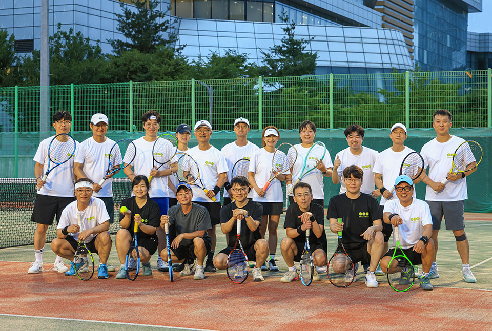
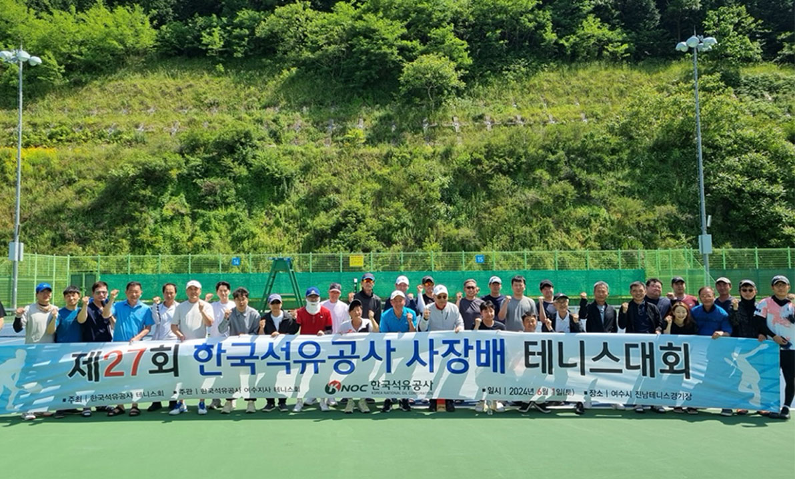
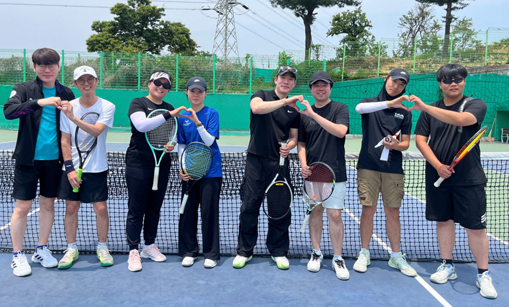
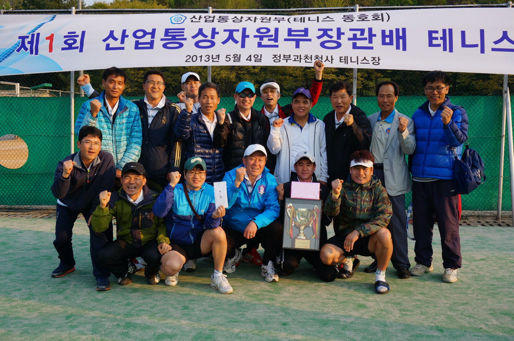
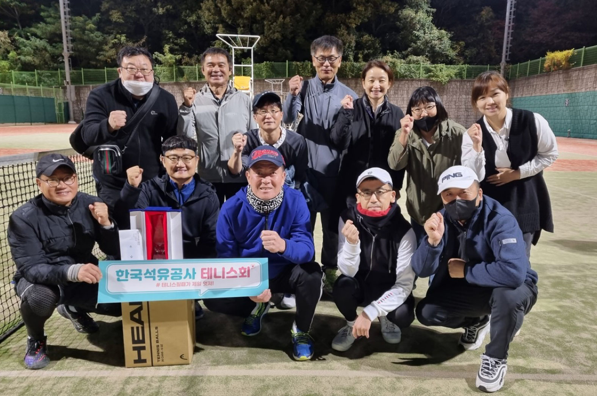

배울수록 어렵고, 또 어려워서 재미있다는 운동 ‘테니스’. 이 테니스에 푹 빠져 있는 공사 구성원이 있다. 바로 테니스 동아리(KNOC TENNIS CLUB/이하 KTC)이다. 공사가 창립한 1979년과 같은 해에 창단된 유서 깊은 KTC는, 지금까지도 많은 회원들이 적극적으로 활동하고 있다. ‘찐’ 운동을 하는 느낌이라며, 테니스에 대한 매력을 수도 없이 나열하는 한국석유공사의 테린이들. 7월의 어느 월요일 저녁, 본사 인근 테니스장을 찾아 직접 만났다.

7월의 어느 월요일 저녁. 공사 테니스 동아리, KTC를 찾아간 시각. 하필 그 시각부터 폭우가 쏟아지기 시작했다. 모두가 탄식을 내뱉고 어찌할 바를 모르고 있었을 때, 동아리 회원 몇 명이 “그래도 나가보자!” 하면서 라켓을 들고 연습장 코트로 달려 나갔다. 본사를 배경으로, 폭우와 함께 그렇게 시작된 동아리 촬영은 예상보다 더, 그들의 열정으로 가득했다.
공사 창립과 같은 해에 창단, 현재 100명 활동
KTC는, 1979년 5월 공사 테니스회로 마포지사에서 창단되었으며, 현재 100명(본사 26명, 지사 76명)이 활동하고 있다. 올해 28회 한국석유공사 사장배 대회에는 무려 51명이나 참석할 정도로 사내에서도 높은 인기를 끌고 있다. 현재 7대 회장은 배성기 팀장으로 경기이사 은종진 과장, 총무 김민 대리, 부총무 임현지 사원이 작년부터 적극적으로 활동하고 있으며, 동아리 이름은 글로벌하게 KNOC TENNIS CLUB으로 명명하고 있다.




해외 지사 주관하에 테니스 모임을 한번 가져보는 게 소원이라는 회원들. KTC는 공사 내에 코트를 확보하여 매주 3회(월, 화, 목) 정기모임을 실시하고 있다. 매월 월례대회, 연 2회 한국석유공사 사장배/회장배 테니스대회, 연 1회 공공기관배 테니스 대회, 울산 내에 클럽 등과 교류전 등 활발한 활동을 하고 있으며, 개인 실력을 향상시키기 위해 현재 개인 회원 10명 정도 아침/저녁 레슨을 받고 있다.
본사/지사 대표 선수들, 각종 대회에서 우수한 성적 거둬
대회 성적도 우수하다. 2012년, 2013년 산업부 장관배 대회에서 공사
본사/지사 대표 선수가 참가하여 40개 공공기관에서 당당히 2회 우승을
차지했으며, 울산에 내려와서는 2015년~2019년 울산 혁신도시
공공기관배 5차례 우승을 차지했다.
“공사 내에 테니스 코트가 3개 있어 접근성이 좋으며, 매주 3회
정기모임이 있습니다. 공사인 뿐만 아니라 가족 포함 테니스 레슨비
할인 적용이 됩니다. 훌륭한 시설, 값싼 레슨비로 인해 우리 회원들의
실력은 우수하며 각종 대회에서 우승으로 나타나고 있습니다. 또한,
회원 중에 전국대회 우승/입상자가 5명이나 있습니다.”라고 동아리의
살림을 맡고 있는 총무 김민 대리는, KTC 회원들의 우수한 성적을
자랑했다.
폭염으로 괴로운 여름에 활동하기에 어려움이 있지 않을까. 코트는
대부분이 야외에 노출되어 있어서 여름 한낮에 햇빛을 직접 받으며
뛰는 건 체력소모가 크나, 운동 시간대를 이른 아침이나 저녁으로 하면
체력소모도 덜고 쾌적하게 운동할 수 있다고 한다.

산업통상자원부(테니스 동호회) 우승
2022년 울산 혁신도시 공공기관배 우승테니스는 전략적인 게임, 다양한 구질과 코스 활용해야
그렇다면 회원들이 꼽는 테니스의 가장 큰 장점은 무엇일까. 부총무
임현지 사원은, “테니스는 머리를 써야 하는 전략적인 게임으로 다양한
구질과 코스를 활용해 경기를 할 수 있다는 점이 매력입니다. 전신
운동인 테니스는 순발력, 민첩성, 지구력, 근력 등을 고루
향상시켜주고 유산소 운동의 효과도 뛰어나거든요. 또, 테니스는 보는
매력도 있어 조코비치, 알카라즈, 시너 같은 세계적인 선수들의 경기
하나하나가 예술이라고 할 수 있습니다. 우리 테니스 동아리에
가입하셔서 체계적인 랠리와 게임 중심 훈련으로 함께 운동해요.
초보부터 상급자까지 환영합니다.”라며 테니스의 장점을 나열하며 신규
회원 모집에 대한 홍보도 놓치지 않았다.
공사 KTC 회원들이 말하는 테니스는, 쉽게 끊을 수 없는 커피 같은
중독성이 있으면서도 매력적인 운동이라고 입을 모은다. 촬영 당일,
폭우를 뚫고 보여준 그들의 열정만큼이나 앞으로도 한국석유공사
테니스 동아리 KTC가 더욱더 많은 테린이들로 가득 차길 기대해 본다.